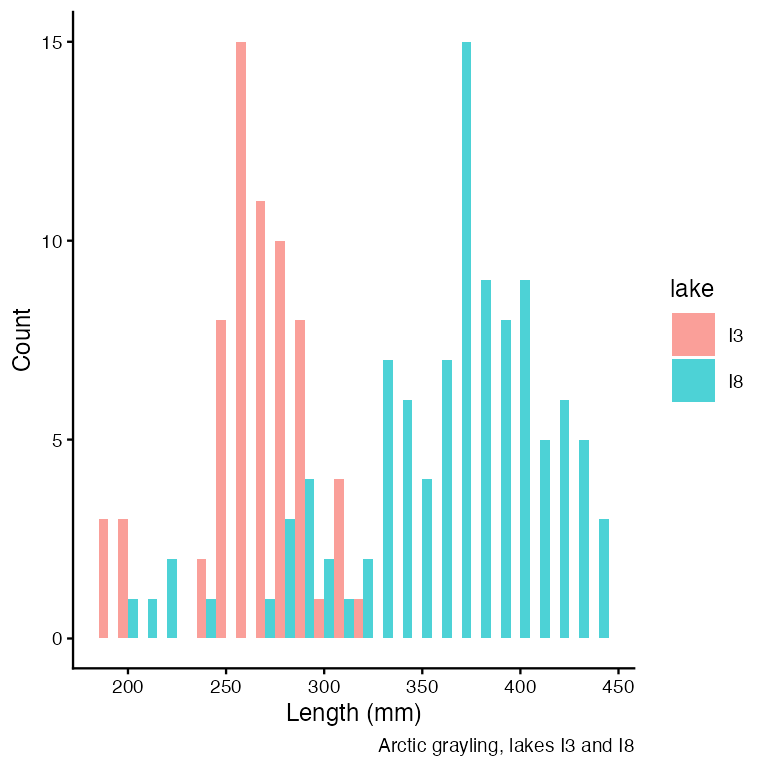
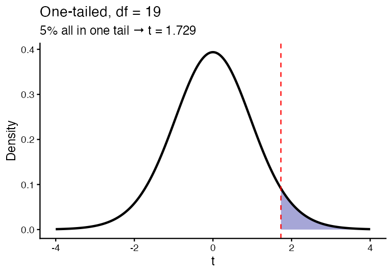
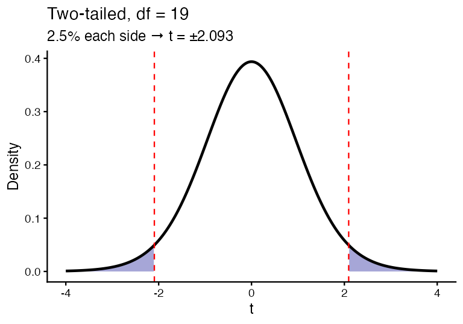

Lecture: Probability & Inference
From the normal curve to the confidence interval
Reading the z-table
The z-table is pnorm() printed on paper: cumulative area to the LEFT of z.
- Find the ones and tenths of z down the left column
- Find the hundredths across the top
- Read the area where they meet
One table works for every dataset — because every dataset gets standardized first. (Contrast the t-table later, which needs a row for each sample size.)

But we never know σ — so z is too confident
Look again at that formula. It needs σ, the population standard deviation. We have never once had it.
What we actually have is s, computed from our 66 fish. And s is itself an estimate — a different sample gives a different s.
Two sources of uncertainty, not one:
- the mean wobbles from sample to sample
- our estimate of the spread also wobbles
Using 1.96 accounts for the first and ignores the second. Intervals come out too narrow and we claim more precision than we earned.
Gosset hit exactly this at Guinness — tiny barley samples, σ never known. His fix: use a curve with fatter tails, so the critical value is bigger and the interval honest.
That curve is Student’s t.

Reading the t-table
\(CI = \bar{y} \pm t \cdot \frac{s}{\sqrt{n}}\)
Only the multiplier changed: t in place of 1.96.
- Rows = degrees of freedom (n − 1)
- Columns = probability, with two header rows: one-tail and two-tail
- A CI is always two-tailed — it has two ends. Use the two-tail column
The bottom row (df = ∞) is 1.96: the t-table contains the z-table.

Worked CI — by table and by R
A sample of 9 fish: mean = 272.8, s = 37.81
- df = 9 − 1 = 8
- Two-tail 0.05 column, row 8 → t = 2.306
- SE = 37.81 / √9 = 12.60
- Margin = 2.306 × 12.60 = 29.06
- CI = 272.8 ± 29.06 = 243.7 to 301.9 mm
“The 95% CI for mean length is 243.7–301.9 mm.”
Had we wrongly used 1.96, we’d have reported ±24.7 — an interval 15% too narrow, claiming precision we never had.

One-tailed: all of α at one end
Use when the question has a direction: are these fish longer than 285 mm? A shorter result would not interest us — it goes with H₀.
- H₀: μ ≤ 285 · Hₐ: μ > 285
- n = 20, so df = 19
- All 5% sits in the upper tail
- t-table, one-tail 0.05, row 19 → t = 1.729
Reject H₀ only if our t exceeds +1.729.


Two-tailed: α split between both ends
Use when either direction would matter: do these fish differ from 285 mm? Longer or shorter, we want to know.
- H₀: μ = 285 · Hₐ: μ ≠ 285
- Same df = 19, same total α = 0.05
- But now 2.5% in each tail
- t-table, two-tail 0.05, row 19 → t = 2.093
Important
Same α, same df, bigger critical value (2.093 > 1.729) — splitting α pushes each cutoff further out, so a two-tailed test is harder to pass.
Pick your tails from the question, before seeing the data. When in doubt, two-tailed — it is also R’s default.
